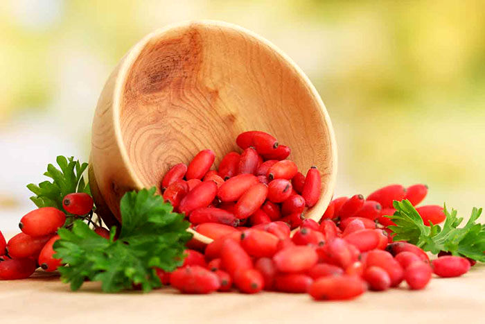

Untitled Document

زرشک نام یک سرده از تیره زرشکیان است.درختچه ای تیغدار به طول 1تا5متر است.چوب آن به رنگ قرمز.قهوه ای یا زرد است..
برگ های آن بیضی شکل با دندانه های اره ای و میوه اش قرمز رنگ بیضوی شکل و ترش مزه است به ریشه درخت زرشک آئر خیس گفته میشود
انتهای بهار و ابتدای تابستان فصل شکوفه دادن بوته زرشک است.غنچه های زرد رنگ زرشک در فصل پاییز رنگ قرمز گیلاسی به خود میگیرند.